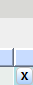

#Delete mbr group #This script will navigate to Group tab and start delete any current mbr groups until they're all gone. #This script assume that the Java GUI is already running. #Usage: delete_mbr_group.sikuli ############################################################### #common code for every sikuli code. Do not remove this section from me7klib import * import re ############################################################### #YOUR code start here ############################################################### #This is your check for the inputs that you are expecting. def Check_args(): #checking for required arguments pass Check_args() ############################################################ #Main program definitions code start from this point #Any global variables here Settings.OcrTextSearch=True Settings.OcrTextRead=True #Any definitions are here def Delete_MBR_Group(): #First need to navigate to the right tab #auto_sikuli.exe sikuliScriptName=nav_tabs.sikuli tabName=Groups tabSubname=mbr Set_arg('tabName', 'Groups') Set_arg('tabSubName', 'mbr') RunSikuli('nav_tabs') exists(Pattern().similar(0.80)) while exists(Pattern().similar(0.80)): print('I am in side') click(Pattern().similar(0.80).targetOffset(8,34)); find(Pattern().similar(0.80)); click(Pattern().similar(0.80).targetOffset(38,2)); wait(Pattern().similar(0.80)) ####################################################### #Main program flow Delete_MBR_Group()